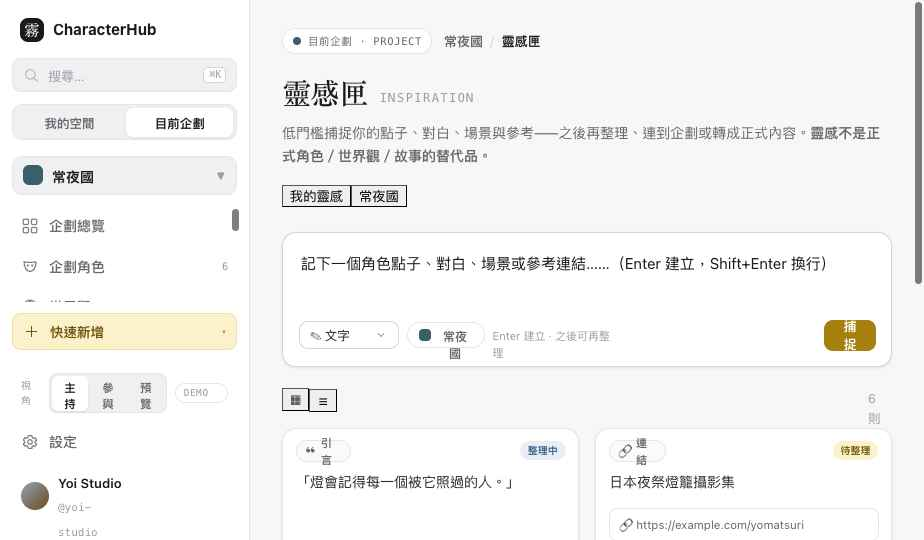

Slice 4C 驗收
靈感匣完成——低門檻捕捉層：快速捕捉 → 待整理 → 補脈絡 → 連企劃 → 轉成正式內容。靈感不是正式角色／世界觀／故事的替代品；轉換後原始靈感保留並記錄去向。
可點擊頁面
Clickable側欄「靈感匣」入口已接上。切「視角」到公開預覽會看到靈感匣不對外公開的封鎖頁。
畫面
Screens

原始內容、捕捉時間、來源、所屬企劃、標籤、可見性、已轉換為…（保留去向）、轉換／指定企劃／封存。他人共享的靈感唯讀。
選目標（角色／世界觀／故事／章節／事件／圖片／Wishlist／委託）＋建立新／加入既有。轉角色＝建本體（不直接建 Link）；轉事件＝選 Story/Chapter。
Account／Project 分區
Scope我的靈感 Account
- 尚未決定企劃（projectId 空）
- 個人角色點子、跨企劃可重用
- 預設 private
企劃靈感 Project
- 已指定 projectId
- 可由企劃成員整理、依權限共享
- 不代表公開頁內容
同一筆靈感只有一個主要 ownership，不複製成兩筆失同步。「我的靈感」加入企劃時＝指派 projectId 或建立與 Project 的關聯（此 ownership 決策仍需本地確認）。
轉換與原始保留
Conversion一筆靈感可轉成 Character／WorldEntry／Story／Chapter／StoryEvent／Asset／Wishlist／Commission。轉換後：原始 InspirationItem 不刪除、status 改 converted、保留「已轉換成什麼」的連結、可一筆轉多個目標、可從正式內容回看原始靈感。已驗證：in5 同時 converted_to 事件＋inspired 關係（一對多、原始保留）。關聯走 EntityLink-shaped（sourceType:inspiration、relationType: converted_to / inspired）。
權限與隱私
Permissions · Privacy| 動作 | Owner/Host | Member | Visitor |
|---|---|---|---|
| inspiration:create / update / archive | ✓ | ✓（自己的） | ✕ |
| inspiration:share_to_project / convert | ✓ | ✓（自己的） | ✕ |
| inspiration:manage_project_items | ✓ | ✕ | ✕ |
Project Host 不會自動取得成員的私人靈感查看權。已驗證：@hoshimi 的 private 靈感（in9）Host 看不到；members-shared（in10）才可見。預設：Account＝private、Project＝private/members。Inspiration 永不出現在 Public Renderer——visitor 進入即封鎖頁；公開幕後靈感需另經發布／精選流程。
Quick Capture / A11y / Responsive
Capture · A11y快速捕捉：Enter 建立、Shift+Enter 換行、貼網址→Link Preview（Demo）、貼圖→Asset 預覽、沒選企劃也能存、建立後輸入框清空、Undo Toast、儲存失敗保留輸入（輸入以 !! 開頭模擬失敗）。A11y：捕捉區有 label、狀態 aria-live、卡片鍵盤 Focus＋Enter 開詳情、Drawer/Modal Focus Trap＋Esc、type／status 不只靠顏色（加字形）、reduced-motion。Responsive：≥1200 三欄、768–1199 列表＋Drawer、<768 單欄＋底部 ＋ 捕捉 FAB（鍵盤開啟不遮擋）。
狀態
States修改檔案
Files| 檔案 | 變更 |
|---|---|
| assets/data.js | InspirationItem fixtures（含 account/project、各 type/status、他人私人/共享）＋inspirationLinks（轉換去向）＋helper（inspirationsFor/conversionsOf…）；ACTION_GRANTS 補 inspiration 動作。 |
| assets/inspiration.css | 快速捕捉、篩選側欄、靈感卡（色票／圖片／連結預覽）、詳情 Drawer、轉換、手機 FAB、響應式。 |
| pages/inspiration.html | Quick Capture、scope 切換、整理、轉換 Modal、權限隱私、visitor 封鎖、A11y。 |
| assets/shell.js | 側欄「靈感匣」入口接上 inspiration.html。 |
| index.html | 靈感匣標記為已重設計，加 Slice 4C 報告連結。 |
Contract Status
需本地確認Demo-only 操作
Demo interaction only尚未完成的 UX
Open issues- 合併重複靈感未做。
- ProjectAssignmentPicker／TagEditor 為 Demo toast，未做完整挑選 UI。
- 轉換「加入既有內容」的既有清單為示意，未接真實挑選。
- Link Preview／貼圖建立 Asset 為 Demo（不接真實抓取／R2）。
- 真實 persistence 未接（捕捉重整不保留）。
Slice 4C 完成，先停（不進共創管理）。等你驗收。
Slice 4（Story／Gallery／Inspiration）三部分全數完成。維持單一 OCData、Demo interaction only，未建立 Repository／API／Auth／第二套 Store。